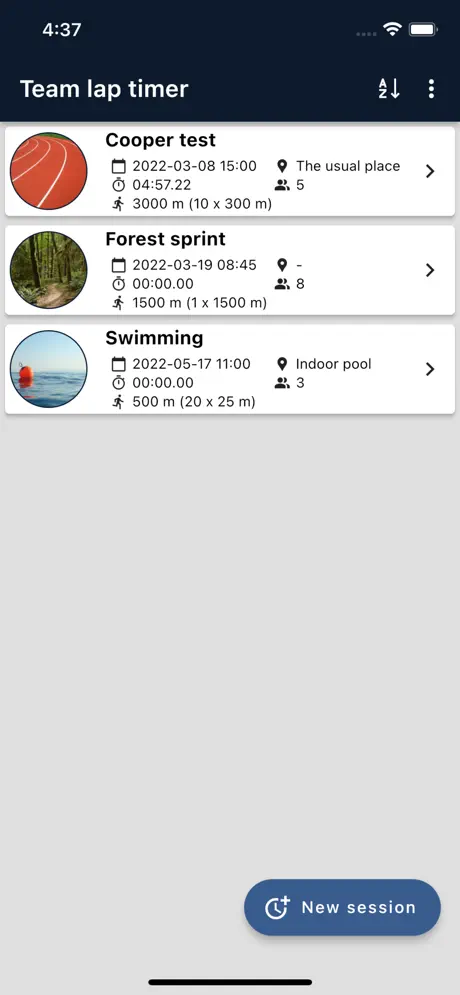
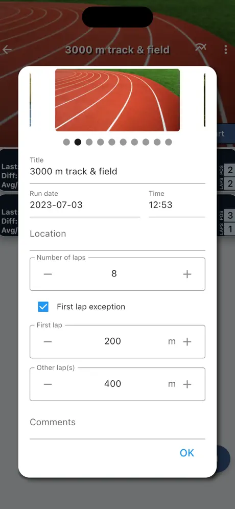
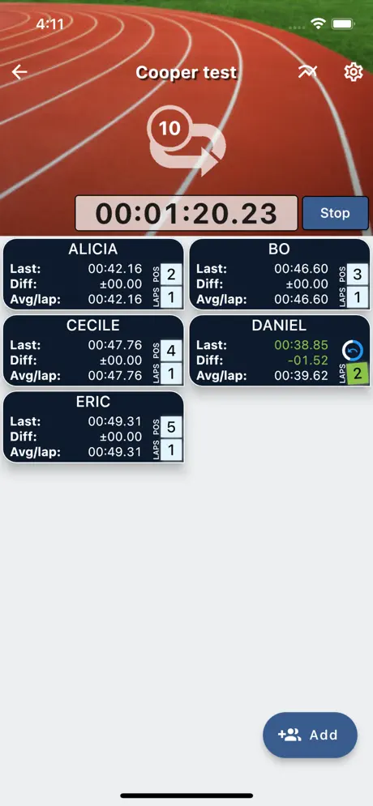
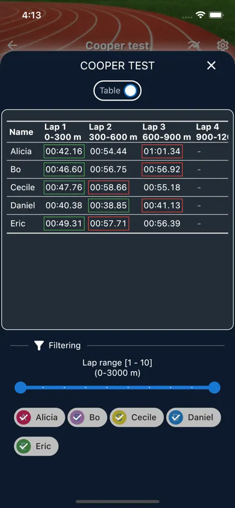
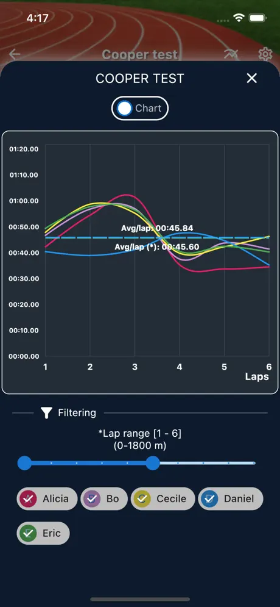

Team lap timer
for iOS & Android
All coaches' best friend when it comes to manually keeping track of the lap times for unlimited number of runners, skaters, paddlers, drivers, swimmers - whatever you want to time. Your whole team will be easily timed with Team lap timer!


Unlimited sessions
You can set up and keep unlimited training/race sessions in the app.

Session details
Register the details needed about your session, like date and time, location, number of laps, lap length in meters etc. The app also supports "first lap exception".

Unlimited participants
Keep track of unlimited participants in a race with support for reordering and sorting. Participants and/or team rosters may also be reused in future sessions.

Table stats
On top of the quick stats in the main screen, Team lap timer also gives you full table stats for additional details and the possibility to export to Excel.

Charts
...and of course charts if you rather use that. Both supports zooming and filtering!
Statistics
In the main screen you immediately see:
* lap times
* time difference between last and previous lap time
* average lap times
* number of laps run
* position/place in the race compared to the others
...for every participant.
Detailed statistics
To get into the details, the table and graph section is where you can filter and zoom in on focus areas.
Both showing lap times, trends, average lap time, average lap time for specific lap interval and more.
Coaching different teams?
If you coach different teams, you have the possibility to save/load participants or team rosters to and from file for easy setup and reuse in future sessions.
Export results
For that extra number crunching on your own, or just sharing results with others, you may also export sessions as .xlsx (Excel) files!